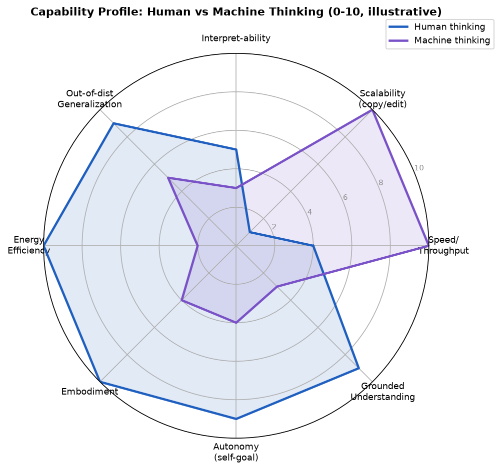
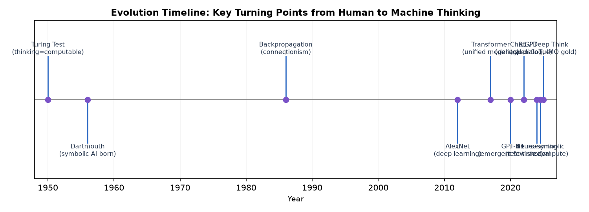
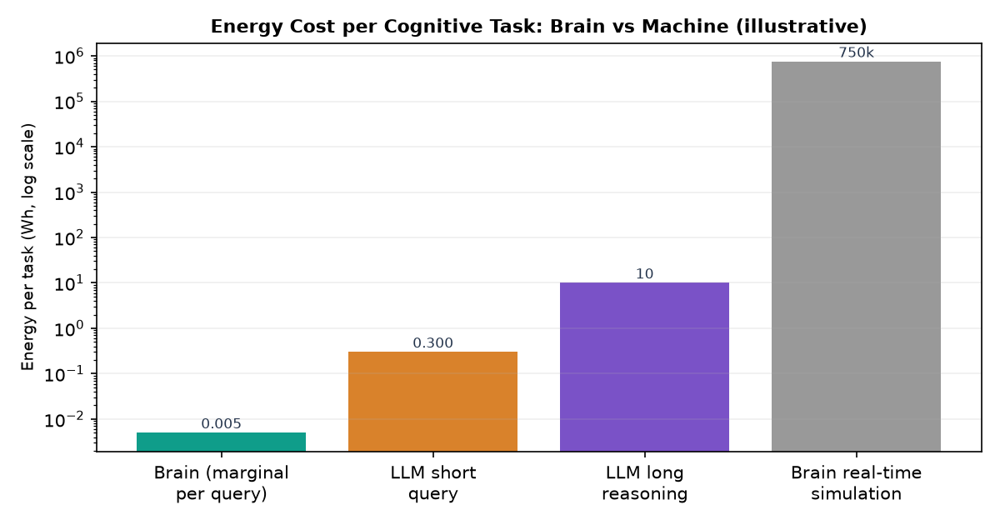
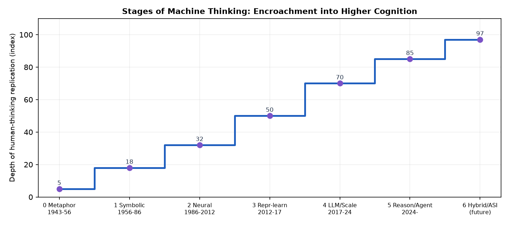
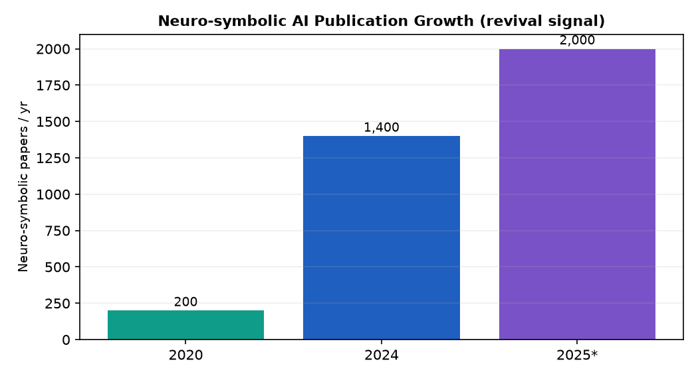

研究视角：认知科学 · 人工智能 · 系统架构 · 演化史观 | 覆盖：人类认知基础（双过程 / 全局工作空间 / 预测编码）、机器思考基础（数据—表征—架构—推理—对齐）、二者元素逻辑结构、从人类思考到机器思考的演化脉络与关键转折、未来走向。本报告以“机器思考是人类思考的形式化外化与工程化重构”为主线，系统回答四组要求：基础元素与核心任务、内部逻辑关系与层级、演化脉络与未来、结构化结论。
要比较两种思考，必须先各自界定：它们由哪些基础元素构成、承担什么核心任务、在何种前提下方能运作、又受哪些边界约束。
| 对照项 | 人类思考 | 机器思考 |
|---|---|---|
| 基质/载体 | 生物神经元（约 860 亿个） | 硅基 GPU/TPU + 软件 |
| 经验来源 | 真实世界具身交互 | 训练数据分布 + 人类标注 |
| 目标设定 | 内生的生存/动机/价值 | 外部人类定义（目标函数/奖励） |
| 能量前提 | 约 20 瓦恒定预算 | 兆瓦—吉瓦级数据中心按需扩展 |
| 学习机制 | 在线、终生、小样本 | 离线批量训练 + 少量微调 |
| 反馈校准 | 物理与社会真实闭环 | 人类反馈(RLHF)/仿真环境 |
| 核心边界 | 受生物/寿命约束；意识不可还原 | 无理解/无意识；分布外脆弱 |
| 可否复制 | 不可精确复制/编辑 | 可无限复制、快照、并行 |
两种思考都不是元素堆砌，而是有序的系统。本部分拆解各自的层级结构、元素间的依赖与协作方式。

| 对照项 | 人类思考 | 机器思考 |
|---|---|---|
| 系统隐喻 | 全局工作空间 + 预测编码机 | 参数化函数 + 注意力检索机 |
| 并行/串行 | 并行模块 + 串行全局广播（瓶颈） | 数据并行计算 + 串行自回归生成 |
| 记忆结构 | 分布式突触存储（存算一体） | 参数权重（存算分离）+ 外部检索 |
| 推理触发 | 目标/冲突/新异唤起 System 2 | 提示/目标函数触发 + 推理预算 |
| 闭环类型 | 具身真实世界闭环 | 数据/工具/仿真外部闭环 |
| 价值来源 | 内生动机与情绪 | 外部奖励模型与对齐约束 |
| 可解释性 | 内省有限、主观可报告 | 可审计参数但难语义解释（黑箱） |
机器思考并非横空出世，而是人类把自己的思考方式一次次“外化”到机器上的历史：先外化符号与规则，再外化神经元与并行，如今外化推理与自主。
| 时间 | 节点事件 | 转折意义 |
|---|---|---|
| 1950 | 图灵测试 | “思考”被操作化、可计算化，奠定机器思考的哲学前提 |
| 1956 | 达特茅斯会议 | AI 学科诞生，符号主义成为第一范式 |
| 1986 | 反向传播普及 | 连接主义复活，机器思考转向“学而非编” |
| 2012 | AlexNet | 深度学习引爆，感知能力机器首次大规模反超人类 |
| 2017 | Transformer | 注意力统一建模，奠定大模型架构基础 |
| 2020 | GPT-3 (175B) | 少样本/涌现，通用表征初现 |
| 2022 | ChatGPT | 通用对话普及，机器思考进入大众视野 |
| 2024 | OpenAI o1 | 推理时计算(test-time compute)成为新 Scaling 轴 |
| 2025 | DeepSeek-R1 / Gemini Deep Think | 公开思维链、IMO 金牌级推理，神经符号复兴 |
| 2024–25 | 神经符号 + RAG 主流化 | “统计 + 逻辑”混合，补齐可解释与可验证短板 |

以下从 14 个维度系统对比二者，作为后续阶段划分与核心发现的基础事实层。
| 维度 | 人类思考 | 机器思考 | 关键差异 |
|---|---|---|---|
| 基础元素 | 感知/记忆/注意/概念/语言/情绪/元认知 | 数据/参数/架构/检索/工具/奖励/CoT | 经验来源与价值设定相反 |
| 核心任务 | 理解、学习、决策、协作、创造、生存 | 识别、生成、检索、推理、规划、对齐 | 前者目的内嵌，后者目标外赋 |
| 表征方式 | 分布式、存算一体、稀疏放电 | 稠密/稀疏参数、存算分离、向量 | 机器能耗因此高 50–1000 倍 |
| 学习机制 | 在线、终生、小样本、零样本泛化 | 离线批量、需海量数据、易过拟合分布 | 人小样本胜，机大数据胜 |
| 推理方式 | 双过程（直觉+慢思）、因果直觉 | 注意力+CoT+搜索、无内生因果 | 机可显式长链但无理解 |
| 记忆 | 情景/语义/程序，可遗忘可巩固 | 参数隐式+外部检索，可精确复制 | 机可无限复制，人不可 |
| 速度/带宽 | 串行瓶颈、约 20W 慢思考 | 并行万亿次/秒、可瞬时复制 | 机在速度/规模碾压 |
| 能耗 | 约 20 瓦恒定 | 单次查询 0.3Wh～数十 Wh，数据中心 MW–GW | 人能效高 1–3 个数量级 |
| 可解释性 | 内省有限但主观可报告 | 参数可审计但语义黑箱（符号部分可解释） | 各有盲区 |
| 泛化/鲁棒 | 强分布外、常识丰富 | 弱分布外、幻觉、需 RAG/护栏 | 人鲁棒，机脆弱 |
| 意识/理解 | 有主观体验与意义 grounding | 无意识，符号接地未解 | 根本差异 |
| 自主性 | 内生目标、自我驱动 | 目标外赋、需人类在环 | 人自主，机受托 |
| 可复制性 | 不可复制/编辑 | 可快照、克隆、并行万实例 | 机可规模化 |
| 失败模式 | 偏见、疲劳、认知偏差 | 幻觉、越狱、Reward Hacking、分布漂移 | 机制迥异 |

划分依据：以“机器思考对人类思考的模仿深度与所替代的认知层级”为主轴，辅以“技术范式 + 能力边界”双重判据。层级由低到高依次为：感知 → 识别 → 表示学习 → 知识/语言 → 推理 → 自主/混合。机器每前进一个阶段，就外化人类思考的更高一层。
| 阶段 | 时期 | 主导范式 | 外化的人类思考层 | 划分依据 |
|---|---|---|---|---|
| 0 隐喻与形式化 | 1943–1956 | 图灵测试、控制论、MP 神经元 | 把“思考”视为可计算 | 哲学/数学前提确立 |
| 1 符号外化 | 1956–1986 | 专家系统、逻辑演绎 | 显式知识与规则推理 | 规则可编程、可解释 |
| 2 神经外化 | 1986–2012 | 反向传播、神经网络 | 突触并行与特征学习 | “学而非编”可行 |
| 3 表示学习 | 2012–2017 | 深度学习(AlexNet/CNN/RNN) | 自动特征/感知能力 | 感知能力机器反超 |
| 4 通用表征/规模 | 2017–2024 | Transformer、LLM、Scaling Law | 语言、知识与少样本 | 统一架构+涌现 |
| 5 推理与自主 | 2024– | test-time compute、Agent、神经符号 | 慢思考、行动闭环、可验证推理 | 推理 Scaling+自主闭环 |
| 6 混合与超越 | 未来 | 世界模型+神经符号+ASI/BCI | 价值耦合、具身、递归自我改进 | 人机混合认知成形 |

| 维度 | 核心结论 |
|---|---|
| 基础元素 | 人类以身体/意识为基，机器以数据/参数为基；二者元素集可一一映射但性质不同。 |
| 核心任务 | 人类任务目的内嵌于生存，机器任务由人类外赋；边界由此而生。 |
| 逻辑结构 | 二者同构于“并行底层 + 串行高层 + 反馈校准”，差异在基质与价值来源。 |
| 依赖关系 | 人类依赖真实世界闭环，机器依赖数据分布与人类对齐；前者鲁棒，后者可控。 |
| 演化脉络 | 沿“外化符号→外化神经→外化感知→外化知识→外化推理”递增，未来走向混合认知。 |
| 关键转折 | 1956/1986/2012/2017/2020/2024/2025 七个节点构成范式跃迁链。 |
| 阶段划分 | 七阶段以“模仿深度+技术范式+能力边界”为三重判据，逻辑自洽。 |
| 未来走向 | 复合路径(规模+推理+世界模型+神经符号+自主)与递归自我改进临界点并存。 |
| 根本差异 | 意识/理解与内生价值是人类独占；速度/规模/可复制性是机器独占。 |

本报告的定量引用来自公开研究与行业披露，以下是主要口径与争议点，便于读者独立核验。
| 数据点 | 数值/说法 | 来源与口径 |
|---|---|---|
| 人脑功耗 | 约 12–20 瓦恒定预算 | NIST/Frontiers in Neuroscience；大脑等效 exaflop@20W |
| LLM 单次查询能耗 | 约 0.24–0.34 Wh（中位） | Google Gemini / OpenAI 披露，2025 独立研究；长推理/ Agent 可达数 Wh–数十 Wh |
| AI 与人脑能效差 | 约 50 倍（单查询）至约 1000 倍（等效性能） | 两种口径：前者比“每任务能耗”，后者比“每单位智能产出/瓦”（Stanford Intelligence per Watt, arXiv:2511.07885） |
| 实时大脑仿真能耗 | 约 2.7 GW（非公平对比） | Blue Brain Project 估计；是“模拟生物学”而非“执行任务”，仅作数量级参照 |
| 推理模型 | o1(2024.9) / o3(2025) / R1(2025.1, Nature) / Claude 扩展思考 | test-time compute 成为新 Scaling 轴；存在“过度思考反而降效”的悖论（ACL 2025） |
| 神经符号论文量 | 2020≈200 → 2024≈1400 → 2025≈2000(预测) | 系统综述(arXiv:2501.05435)；PNAS Nexus 2025 称其为“Scaling Law 的反题” |
| 意识理论争议 | GNW / IIT(Φ) / 预测编码 / HOT / RPT 并存 | 2025 对抗性合作实验对 GNW 与 IIT 均给出支持证据，但未决出唯一理论——本报告采用 GNW+预测编码作为架构对照主线 |